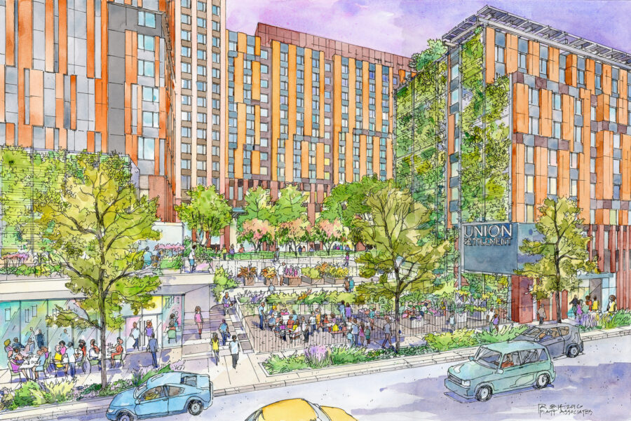
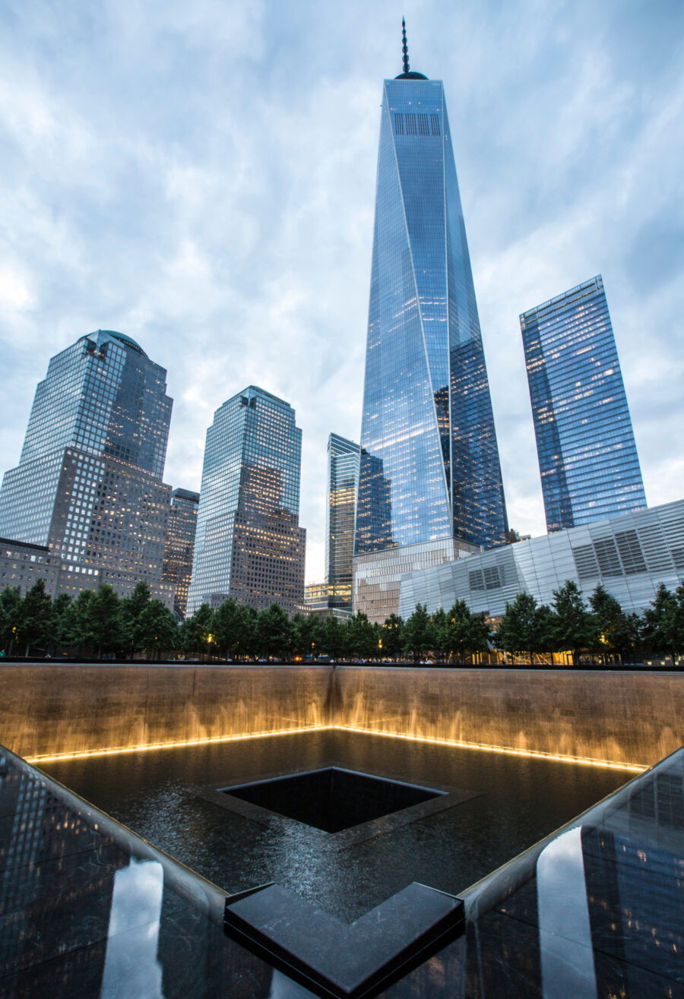
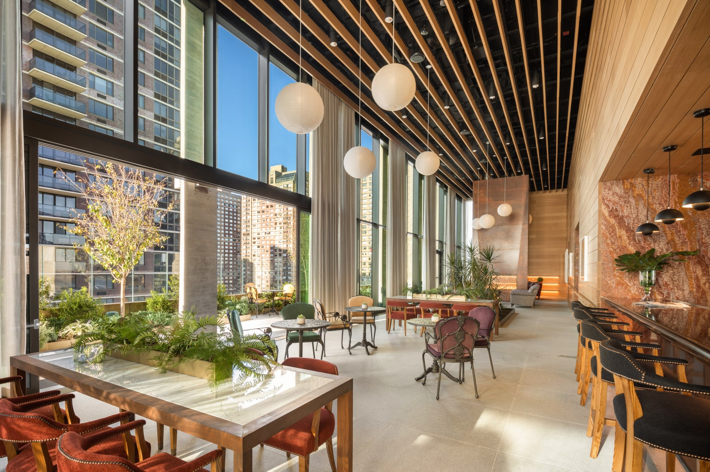
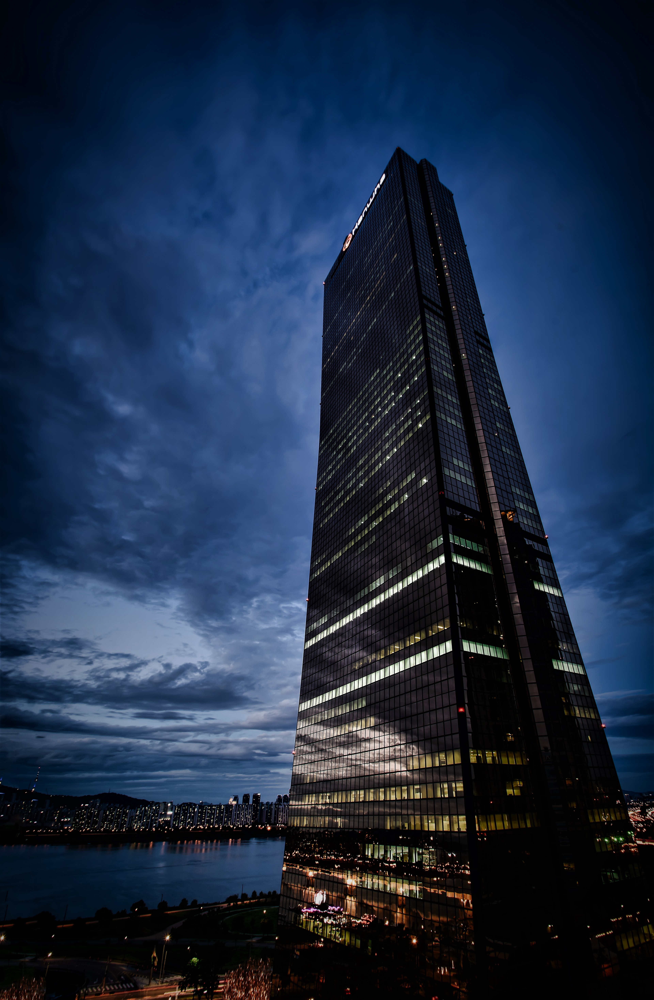

WE ARE WORLD LEADERS IN RESIDENTAL DESIGN.
The Essex at Essex Crossing: 2020 AIA New York & SARA Award Winner.

We are committed to sustainable living.
Sendero Verde: The World’s Largest Fully Affordable Passive House Buliding.

We believe to the power of architecture to create
positive urban change.
The Essex at Essex Crossing: 2020 AIA New York & SARA Award Winner.

We think context matters.
288 Pacific: Balancing the history of Jackson Square.

We breathe new life into old buildings.
The Pacific: AIA San Francisco Award Winner.

We are at the forefront of residental
programming,plannig and design.
Millennium Tower Boston: A New High Water Mark of Modern Luxury Living in Boston.
We are architects, planners, and designers out to change the world.
At the core of our practice is the idea that cities are the incubators of our greatest achievements, and the best hope for a sustainable future. We believe that architecture and design matter, and that through the application of our skills, passion, talent, and hard work we can make a difference in the world.


Our work straddles the boundary between architecture, urban design, and public policy.
Recent solutions include a new approach to affordable housing at Sendero Verde in Harlem, a creative approach to the reuse of existing infrastructure at Pier 57 on Manhattan’s West Side, and the creation of new sustainability standards for a major development partner.


We create world-class architecture.
Hand Made Architects-designed projects have received over 250 design awards, including Honor Awards from the AIA and Global Awards for Excellence from the Urban Land Institute (ULI).
Our work appears regularly in both mainstream and industry specific publications. Feature articles on Handel Architects-designed projects have appeared in The Atlantic, Architectural Record, and Interior Design Magazine.
Latest Awards
Architectural Design - Luxury - LIV Hospitality | Austin Proper Hotel & Residences
Finalist, Lifestyle Hotel Public Space - Hospitality Design Awards | Austin Proper Hotel & Residences
Finalist, Large Health + Wellness - NYCxDESIGN Awards | Inspir Carnegie Hill
Finalist, Outdoor Space - NYCxDESIGN Awards | Two Blue Slip, Greenpoint Landing
2021 Public Use Project of the Year - CIBSE Building Performance Awards | The House at Cornell Tech
Recent News

Austin Proper wins LIV Hospitality Design Award

5 Luxury Senior Residences Designed to Stun

Luxury Hospitality Brand Four Seasons Opens Private Residences In San Francisco (Forbes)
Hand Made Architects has a culture of dedication, passion and support.